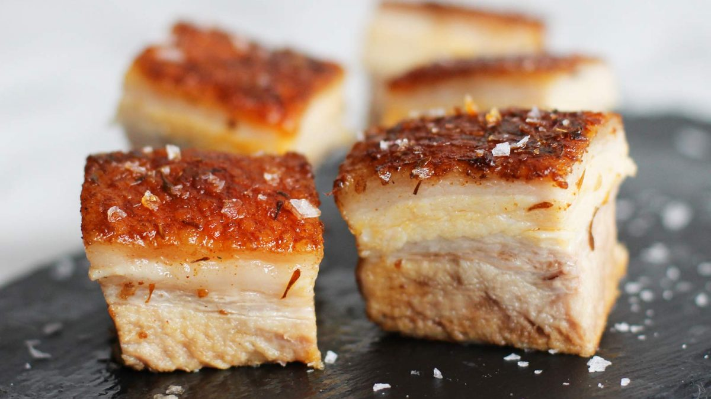

Instant Pot Pork Belly

Description:
Want melt in your mouth pork belly in a short amount of time? Try this easy recipe with your instant pot!
Prep time: 10 minutes
Cook time: 100 minutes
Servings: 8
Ingredients:
- 1 lb pastured pork belly
- 1 tsp sea salt
- 1 tsp smoked paprika
- 3-5 cloves of garlic or 1tsp garlic powder
- 1 tsp thyme
- 1/2 cup of water with 1 tbsp dissolved Better Than Bullion chicken or garlic flavor
- 1/4 cup sherry or white wine
- 2 tbsp of duck fat
Steps:
- Season the fat side of the pork belly
- Pour stock and sherry/wine into the instant pot
- Place pork belly fat side up
- Pressure cook on High for 60 minutes
- Before the instant pot is done cooking, warm up a cast iron with the duck fat
- Preheat the oven to 400 degrees Fahrenheit convection mode (set to 425)
- Release the pressure and place the pork belly onto the cast iron fat side down with two spatulas because it will be tender and may fall apart
- Place cast iron into the oven for an additional 20 minutes
- After it's done cooking, let it rest for 10-15 minutes
- Cut into cubes and serve over rice and vegetables